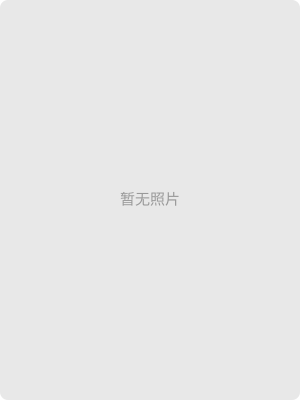

北引·东联·西融
高职创新创业教育生态共同体的构建与实践
首页
成果简介
成果申报书
主要完成人
成果报告
成果获奖
四库平台
专著教材
成效应用
理论推广
辐射东盟
媒体报道
领导认可
主要完成人
您的位置：首页 | 主要完成人
第一完成人：张海燕
第二完成人：纪海波
第三完成人：赵峰
第四完成人：康冰心
第五完成人：周丽琴
第六完成人：潘知南
第七完成人：李静
第八完成人：张秀芹
第九完成人：张华
第十完成人：李次春
第十一完成人：刘晶
第十二完成人：韩绪鹏
第十三完成人：章婷
第十四完成人：丘宁
第十五完成人：孙晓华
第十六完成人：李向红
第十七完成人：许明
第十八完成人：陈良
第十九完成人：朱广超
第二十完成人：姜攀
第二十一完成人：姚强
第二十二完成人：刘英龙
第二十三完成人：秦景良
第二十四完成人：蒋益进
第二十五完成人：邓芸芸
第五完成人：周丽琴

周丽琴
，汉族年出生，1984-05，15，16，广西电力职业技术学院，从事教务处（产教融合办公室）副处长（副主任）。
主要贡献：
教育教学管理、检测技术与自动化技术
获奖情况：
硕士研究生毕业
版权所有：广西电力职业技术学院 | 网站备案号：桂ICP备08001145号-1 | 桂公网安备:45010702000119号 | 地址：广西南宁市玉洞大道109号 | 邮编：530007 | 联系电话：0771-2212798